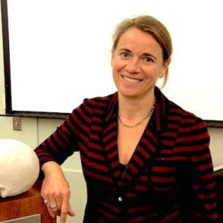
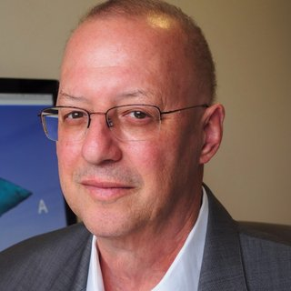
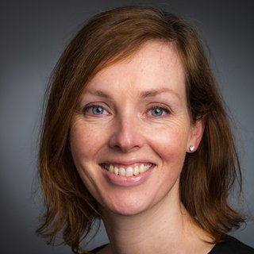

People
The people of AT-NCIGT
Investigators, clinicians, scientists, students and collaborators who carry out the center's research. Reach out to any of them to collaborate, invite a talk or join a lab.
Leadership
Principal investigators of the center.

Nobuhiko Hata
Multiple PI · Administration Core Robotic navigation and image-guided interventionsCenter investigators
Investigators funded in the current cycle (2P41EB028741, 2026–2031), including clinician-scientists. Follow a link to see their project.

Stephan E. Maier
TR&D 1 lead Quantitative diffusion MRI TR&D 1 project →Carl-Fredrik Westin
TR&D 1 · Training and Dissemination lead Diffusion MRI methods TR&D 1 project →William M. Wells III
TR&D 1 co-investigator Image registration and multimodal learning TR&D 1 project →[First name] Paech
TR&D 1 investigator [Research focus] TR&D 1 project →Oliver Jonas
TR&D 2 lead Implantable microdevices TR&D 2 project →
Sharath Bhagavatula
TR&D 2 investigator Interventional radiology TR&D 2 project →[First name] Akgul
TR&D 2 co-investigator [Research focus] TR&D 2 project →Junichi Tokuda
TR&D 3 lead MRI-guided robotic interventions TR&D 3 project →Jagadeesan Jayender
TR&D 3 investigator Surgical navigation and computer vision TR&D 3 project →Haoyin Zhou
TR&D 3 co-investigator Trackerless navigation for minimally invasive surgery TR&D 3 project →Rising investigators
Early-career faculty and senior fellows ready for their next step. They welcome conversations about collaborations, invited talks and career opportunities.
[Name]
[Assistant Professor of Radiology]
Open to: collaborations, invited talks, faculty positions
[Name]
[Instructor in Radiology]
Open to: collaborations, invited talks, faculty positions
[Name]
[Senior research fellow]
Open to: collaborations, faculty positions
Investigators of past funding cycles
We gratefully acknowledge the investigators of the 2021–2026 cycle (P41EB028741-01 to -05) and of earlier NCIGT cycles (P41EB015898), whose work is the foundation of the center today.
Nathalie Y. R. Agar
Investigator, 2021–2026 cycle Mass spectrometry imaging (TRD 1 lead)Tina Kapur
Investigator, 2021–2026 cycle Training and Dissemination (core lead)
Alexandra J. Golby
Investigator, 2021–2026 cycle Image-guided neurosurgery; AMIGO clinical directorSarah F. Frisken
Investigator, 2021–2026 cycle Image analysis for brain tumor surgery
Ron Kikinis
Investigator, 2021–2026 cycle Open-source medical image computingLauren J. O’Donnell
Investigator, 2021–2026 cycle Diffusion MRI tractography
Fiona M. Fennessy
Investigator, 2021–2026 cycle Quantitative prostate MRIPedro Moreira
Investigator, 2021–2026 cycle Image-guided prostate cryoablation and roboticsKemal Tuncali
Investigator, 2021–2026 cycle MRI-guided interventionsExternal Advisory Committee
Leaders in the field who review the center’s progress and advise its leadership.
[Committee members and chair]
Join us
Open positions in center labs, visiting appointments and training opportunities.